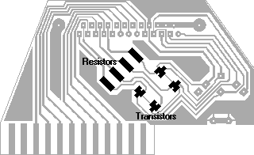

You definitely need BSV52 transistors and 4.7 kOhm resistors for this cable, different parts may make the cable inoperable.
On circuit diagrams, plugs are displayed as viewed from the back side, the solder side. Chips are displayed as viewed from above; also, see the small semicircular cut for finding the correct orientation. When in doubt, see the corresponding description on the legend page.
You need the following parts to build this adaptor:
One printable circuit board of about 9 x 5.5 centimeters
One PCB-mountable 6-pin DIN female port (Commodore serial port)
One PCB-mountable 25-pin male plug (PC parallel plug)
Four BSV52 transistors
Four SMD 1206-style 4.7 kOhm resistors
Step 1. Build the board of the adaptor, cut it to shape and drill the holes in it, according to the board diagram (300 DPI resolution). This diagram shows the board as viewed from below.
Step 2. Solder the PCB-mountable DIN port and parallel plug onto the top side of the board.
Step 3. Build the amplifier bridges, consisting of one transistor and one resistor each, onto the appropriate places. These include the following connections:
| Parallel plug | Parallel plug |
|---|---|
| 13, Select | 1, Strobe |
| 12, PaperEnd | 14, AutoFeed |
| 11, Busy | 17, SelectIn |
| 10, Ack | 16, Init |
The collector of each transistor should be pointing towards the pin in the left column of the table. The base of each transistor should be connected to one side of the resistor; the other side of each resistor should be connected to the pin in the right column of the table. The emitters of the transistors should be connected together to the common ground of the adaptor.
The parts should be soldered the following way onto the board. This diagram shows the board as viewed from below.
You can find the description of all parts used on the diagrams at the legend page.
Contact |
Copyright and license |
Blog page | Recent updates |
Title page
(This page best viewed with any browser)
{kind=link}